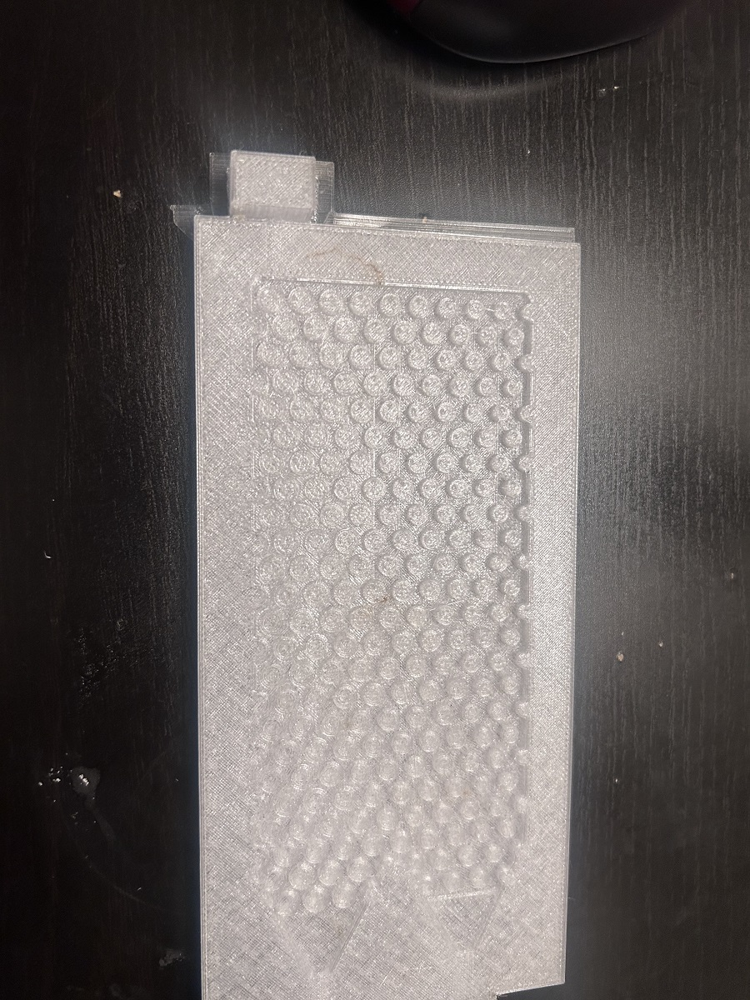
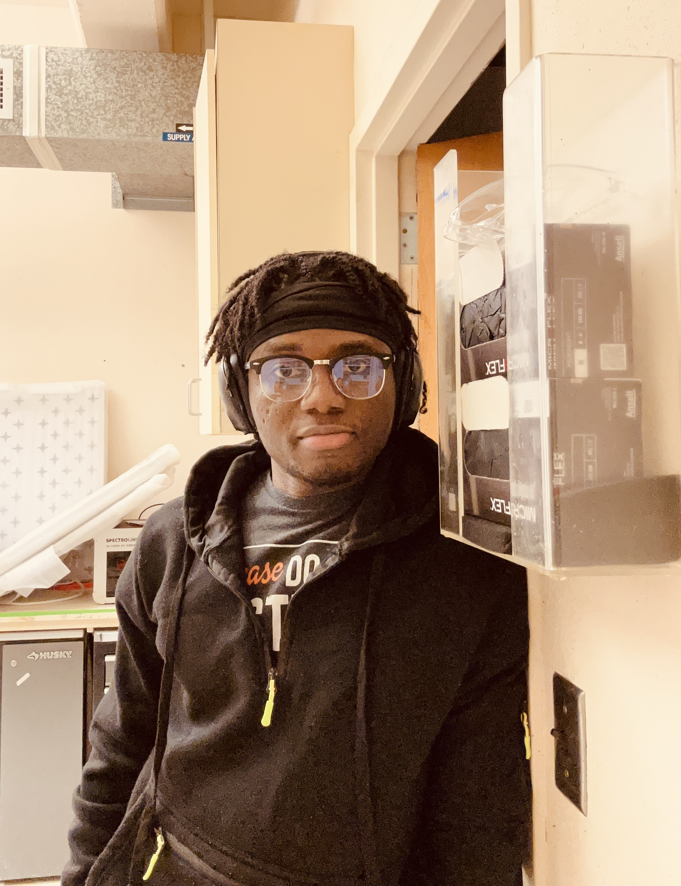

Hi, I’m Desmond Obaita.
I build process models from first principles, then takes them off the screen and into hardware: 3D‑printed separators, microchannel reactors, and pilot plants. I like turning messy problems into clear answers
Ph.D. candidate at Oregon State University (expected March 2027). I’m looking for process engineering roles where modeling and the plant floor meet.


Who I am
The best engineers aren’t always the most decorated. They’re the ones curious enough to ask the right questions and disciplined enough to do the work right. That’s the engineer I want to be, whether I’m picking up a new tool, learning a new method, or walking into an unfamiliar system.
I’ve spent most of my life chasing excellence in classrooms and research labs. Now I want to put that drive, optimism, and leadership experience to work on process intensification: making chemical processes smaller, cleaner, and more efficient so industries can grow without costing the planet as much.
First principles
I want to know why a result is right, not only that it matches. Models I build start from mass, momentum, and energy balances.
Hands on the hardware
A model earns trust when it meets a real device. I design, print, wire, leak‑test, and commission the things I model.
Show up for people
Representing graduate students, judging student posters, volunteering at the South Corvallis Food Bank. Community keeps me grounded.
Off the clock, I play chess. It’s the same muscle I use at work: read the position, think a few moves ahead, and stay calm when the plan has to change.
What I do
Three kinds of work, usually in the same week.
Model the process
Multiphysics models of reactors and separators: flow, heat transfer, species transport, and kinetics, calibrated against data so they can predict, not just describe.
COMSOL Multiphysics, MATLAB/Simulink, Python, Aspen HYSYS, CFD
Build the device
Turning process requirements into equipment you can hold: CAD, 3D printing, and rapid iteration through more than 15 lab‑scale separator prototypes.
Fusion, SolidWorks, Siemens NX, FFF 3D printing
Bring it online
Instrumentation, functional testing, leak testing, and commissioning alongside controls and research engineers at pilot scale.
PFD/P&ID, instrumentation, leak testing, troubleshooting
Selected projects
Each one links to a short case study: the problem, what I did, and what came of it.
Separating liquids with geometry, not membranes
My dissertation asks whether carefully designed gradients in channel shape and surface wettability can pull two liquids apart on their own. I model it in COMSOL, print the devices, and test them on the bench, including a DOE‑funded lithium extraction project where a membrane‑less separator exceeded 95% separation efficiency.
Read the case study

Modeling and commissioning a pilot fluidized‑bed reactor
As a process modeling engineer intern, I built a COMSOL model of a fluidized‑bed carbochlorination reactor from scratch, coupling hydrodynamics, heat transfer, species transport, and custom shrinking‑core kinetics. Outside the model, I helped wire, test, and commission three pilot process units.
Read the case study
Two‑phase microflow simulator
A browser‑based simulator I built so anyone can explore how droplets behave in a microchannel. Change the inputs, watch the flow respond, and get a feel for the physics behind my research without installing anything.
Read the case study
Microchannel reactors for sustainable aviation fuel
Ethanol to butene is a key step in turning renewable alcohol into jet fuel. I modeled additively manufactured microchannel reactors for that conversion, linking COMSOL to MATLAB in an automated calibration loop. The work is part of a 600× numbering‑up study now in review at Nature Energy.
Read the case study
Strengths & expertise
Where I can help a team on day one.
Process modeling that holds up
I build multiphysics models from the governing equations up, check them against hand calculations and data, and keep them parameterized so they’re easy to rerun when new results come in.
COMSOL Multiphysics · CFD · MATLAB/Simulink · Python · Aspen HYSYS · Excel VBA
Plant‑floor readiness
I’ve integrated pressure, temperature, and flow instruments, calibrated gas analyzers, run functional tests, and leak‑tested piping on pilot units.
PFD/P&ID · Instrumentation · Commissioning · Leak testing · Troubleshooting
Design you can build
I move from a process requirement to a CAD part to a printed prototype, then test it and feed what I learn back into the design.
Fusion · SolidWorks · Siemens NX · Additive manufacturing
Clear technical communication
Quarterly reports for the DOE, presentations for sponsors, case write‑ups for teammates. I like making hard ideas easy to act on.
Technical writing · Statistical analysis · JMP · Cross‑functional collaboration
Journey
How I got here.
-
B.Eng. Chemical Engineering, University of Benin
Published my first paper, a statistical optimization of bitter kola extract yield.
-
Graduate Research Assistant, ATAMI at Oregon State
Joined Prof. Goran Jovanovic’s group working on microscale process intensification.
-
Chemical Engineering Representative, Graduate Student Association
Represented graduate students in department discussions and carried their feedback to program leadership.
-
Process Modeling Engineer Intern, Duranium
Built a reacting fluidized‑bed model and helped commission pilot‑scale units.
-
M.Eng. and Ph.D. in Chemical Engineering, Oregon State
Now a Ph.D. candidate, wrapping up my dissertation on gradient‑driven microscale separation.
Direction & goals
Where I’m headed next.
I want to work as a process engineer on technology that is moving from the lab toward the plant: demonstration units, pilot scale‑up, and first‑of‑a‑kind facilities. That stage needs people who can build a credible model on Monday and stand next to the skid on Tuesday, and that’s the kind of engineer I’ve been training to be.
I’m especially drawn to energy transition and critical minerals work, from sustainable fuels to lithium and magnesium recovery, where better process design has an outsized effect.
In the next few years I want to
- Own the process design of a unit from PFD through commissioning.
- Use first‑principles models to cut the number of experiments a scale‑up needs.
- Grow toward professional licensure and technical leadership.
- Keep mentoring and explaining, so the next engineer has an easier start.
Let’s talk
I’m open to full‑time process engineering roles starting in 2027. If you’re building something that has to work at scale, I’d love to hear about it.
obaitadesmond12@gmail.com · Corvallis, Oregon